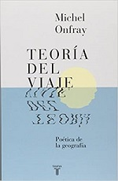
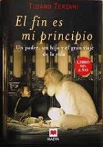
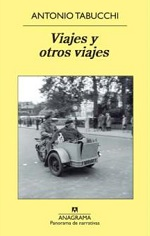

| Para mi es imposible salir a cualquier parte sin un libro, así que quieo compartir contigo los libros impresindibles para viajar. Leer es de las formas más maravillosas de viajar. |
|  | ||
| Teoría del viaje: Poética de la geografía
Michel Onfray Además de ser una invitación a soltar amarras, este libro tiene el poder de prolongar la emoción y el sabor del viaje a través de la filosofía y la literatura , de la historia y la mitología | ||

| ||
| La vuelta al mundo en 80 días
Julio Verne Phileas Fogg es un inventor que viven en la Inglaterra victoriana. Él cree que puede viajar por todo el mundo en 80 días. Utilizando una variedad de medios de transporte, él otros dos acompañantes se embarcan en una aventura en globo alrededor del mundo. | ||
|  | ||
| El fin es mi principio
Tiziano Terzani Tiziano cuenta a su hijo Fulco algunas de sus aventuras más grandes: desde una vivencia en la Guerra Fría a sus años viviendo en la China de Mai y sus años en el Himalaya. | ||
|  | ||
| Viajes y otros viajes
Antonio Tabucchi Tabucchi nos lleva de la mano para que lo acompañemos en muchos de los mejores viajes de su vida. Viajes en donde brotan la alegría, la nostalgia y la añoranza. | ||

T R A B A J A M O S P A R A Q U E L O S A M A N T E S D E L A A V E N T U R A |